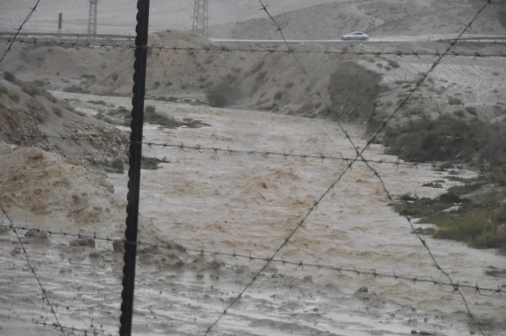
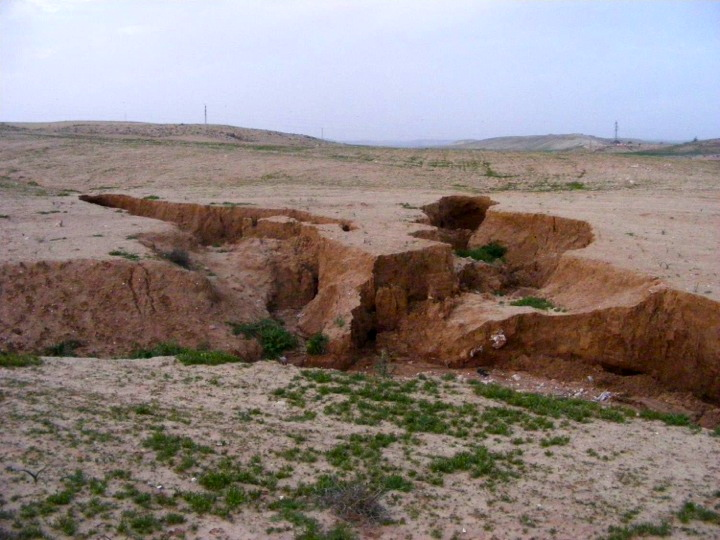
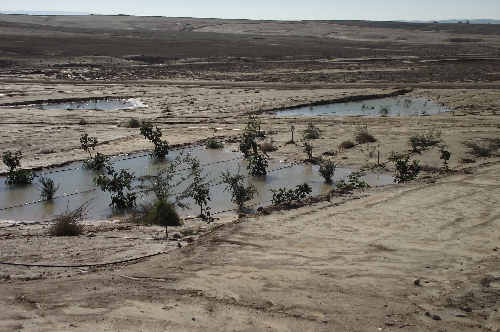
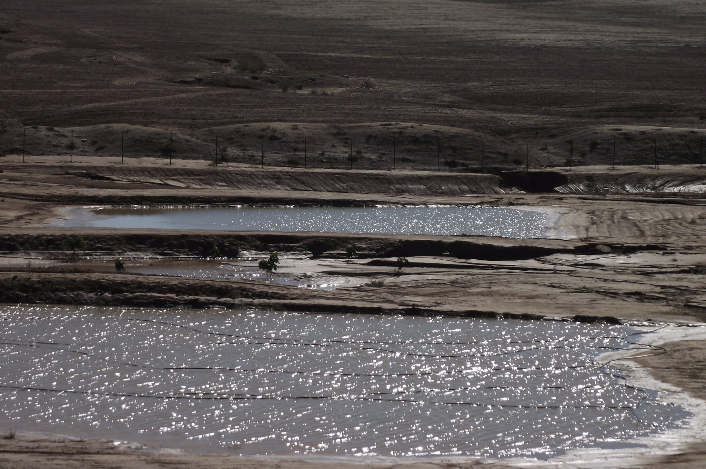
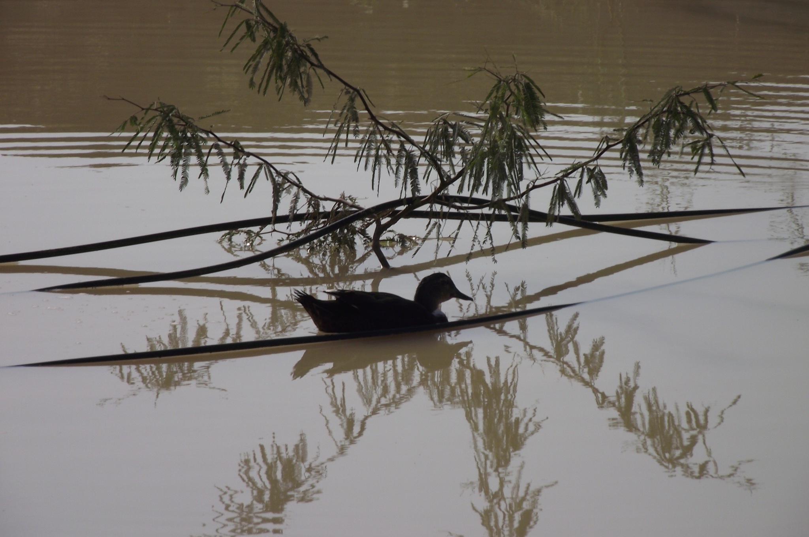

Late last year, the Negev got a record amount of rain. Over three days in December, 160 mm of rain, nearly 80% of the yearly average, was recorded in the area of the project site.
Normally, this would cause massive erosion on the project site. In fact, this was a common image on the project site before we began our Soil Enhancement Initiative, led by Dr. Stefan Leu of Ben Gurion University of the Negev:
Implementing the soil erosion and water retention system has been a key part of the project�s soil enhancement program, designed and supervised by BGU researcher Stefan Leu and his team. As part of this program, we have been collecting 27 species of desert hardy trees and shrubs in the project�s greenhouse. These are intended to improve soil fertility and increase the carbon content of the soil, hold water in place, sequester nitrogen, and provide shade and protection against the prevailing winds, thereby enriching the biodiversity of the site. To date, some 3,000 trees have been transferred to the 100-acre site, including 360 high-quality olive trees, planted by local high school students last March. All trees have taken well to the transfer, completely transforming the characteristics of the previously barren site. In addition to the immediate visual impact, we are already seeing some other spectacular changes: bird species not previously seen in the vicinity are now visiting in increasing frequency and numbers.
These storms put our water retention and erosion protection systems to the test. But thanks to the efforts of Stefan and his team, the project site literally "held its ground." The low water-retention earth mounds designed by Stefan and distributed throughout the site, performed well, holding large quantities of water that otherwise would have been lost, and forming large water pools in the open fields.
 The pools also attracted waterfowl to the site, where they were able to enjoy the calm after the storm�a very rare sight in this area.
